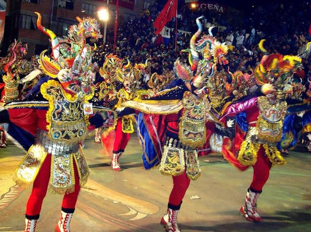
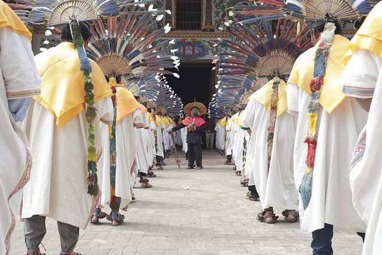
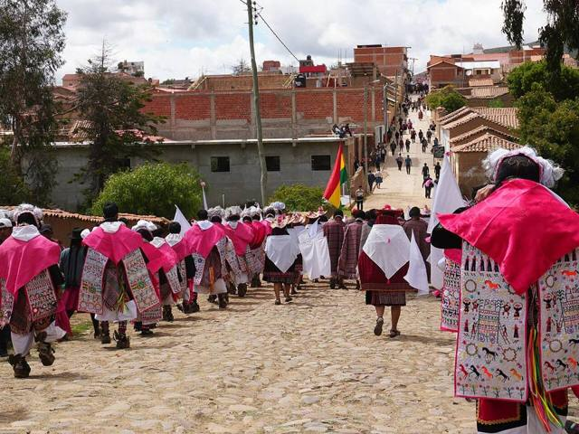
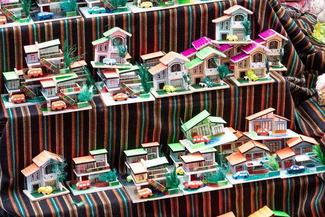
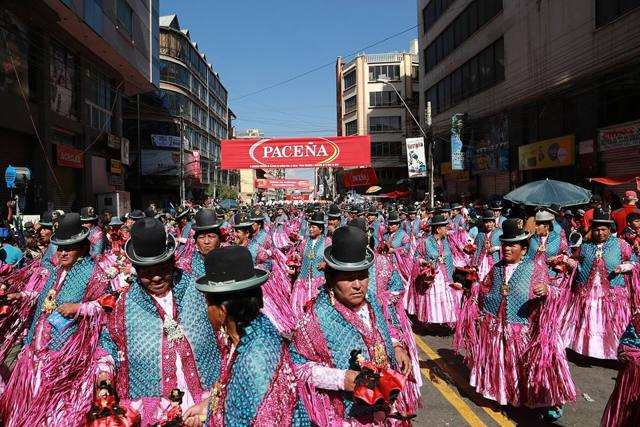
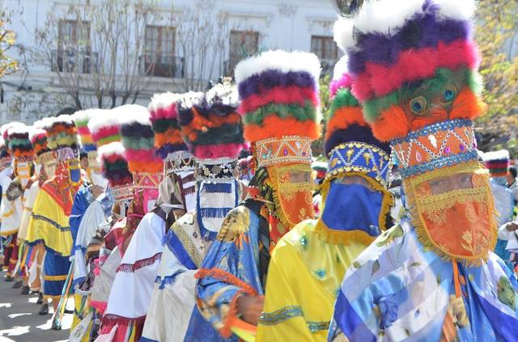
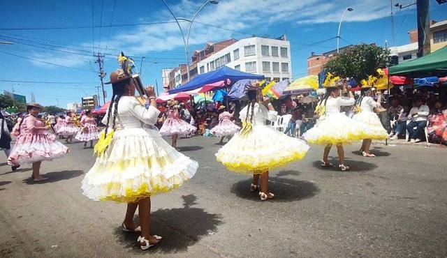

Cultura y tradiciones
Patrimonio UNESCO
Los sitios y tradiciones de Bolivia inscritos por la UNESCO.
Patrimonio Mundial
.jpg){kind=link}


Misiones jesuíticas de Chiquitos
Inscrito en 1990
Dónde: Misiones: San Javier · Santa Cruz Misiones: Concepción · Santa Cruz Misiones: Santa Ana de Velasco · Santa Cruz Misiones: San Miguel de Velasco · Santa Cruz Misiones: San Rafael de Velasco · Santa Cruz Misiones: San José de Chiquitos · Santa Cruz


Tiwanaku: centro espiritual y político de la cultura tiwanaku
Inscrito en 2000
Dónde: Tiwanaku · La Paz


Parque Nacional Noel Kempff Mercado
Inscrito en 2000
Qhapaq Ñan, sistema vial andino (seis países, entre ellos Bolivia)
Inscrito en 2014
Patrimonio Cultural Inmaterial





Ichapekene Piesta, la fiesta mayor de San Ignacio de Moxos
Inscrito en 2012
Ichapekene Piesta · 31 de julio
Dónde: San Ignacio de Moxos · Beni


Pujllay y Ayarichi, músicas y danzas de la cultura yampara
Inscrito en 2014
Pujllay de Tarabuco · marzo (fecha variable)
Dónde: Tarabuco · Chuquisaca

-16.jpg){kind=link}

.jpg){kind=link}
Festividad del Señor Jesús del Gran Poder en La Paz
Inscrito en 2019
Gran Poder · mayo (fecha variable)
Dónde: La Paz

.jpeg){kind=link}
Fiesta Grande de Tarija
Inscrito en 2021
Fiesta Grande de Tarija (San Roque) · 16 de agosto
Dónde: Tarija
Ch'utillos, el encuentro de culturas en Potosí
Inscrito en 2023
Ch'utillos · agosto (fecha variable)
Dónde: Potosí

_2025.jpg){kind=link}
Festividad de la Virgen de Guadalupe, patrona de Sucre
Inscrito en 2025
Virgen de Guadalupe · 8 de septiembre
Dónde: Sucre · Chuquisaca